Tops face down on a blanket: six legs, eight feet (gauged before the plates go on) and the two rails. Then the cabinets are set by the walls. Rings come in chapter G.
| No. | Part | No. | Hardware | Qty |
|---|---|---|---|---|
| P01 P02 | Top A and top B, EKBACKEN 249 × 65 cm, 28 mm thick | H01 | M4 x 16 mm machine screw, IKEA 108443 (with the OLOV legs) | 30 |
| P03 P04 | ALEX 1, drawer unit; ALEX 2, storage unit with door (36 × 58 × 70 cm) | H02 | #8 x 5/8 in pan head screw (feet plates, 4 each) | 32 |
| P05 | OLOV leg x 6, 105 mm plate | H06 | #6 x 5/8 in flat head (rings, 3 each) | 24 |
| P06 P07 | Rail A and rail B, steel angle 213 cm, drilled | H03 | #10 x 1 in pan head, Robertson (rails; 17 now, 2 in chapter H) | 19 |
| P09 P10 | Round adjustable foot 4 in x 8; printed locating ring x 8 (chapter G) | P18 printed tools: leg jig, feet corner jig, edge T-square, ALEX corner template, drill guide (tower + pucks), foot height gauge, wall gauge | ||
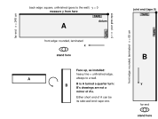
Decide the desk height first (the legs are pre-set in step 1): built at 83.0 cm as planned; optional printed ALEX feet, 2, 4 or 6 cm tall, raise everything by their height. SOURCE-DEFINED
| ALEX feet | Underside of the tops (cm) | Top surface (cm) | Every OLOV set to (cm) | Rail lower edge (cm) |
|---|---|---|---|---|
| none (as planned) | 80.2 | 83.0 | 80.2 | 75.1 |
| 2 cm | 82.2 | 85.0 | 82.2 | 77.1 |
| 4 cm | 84.2 | 87.0 | 84.2 | 79.1 |
| 6 cm | 86.2 | 89.0 | 86.2 (OLOV max 90) | 81.1 |
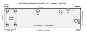
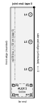
| Mark | x | y | Tape reading |
|---|---|---|---|
| L1 | 15 | 42 | 42 from A's back edge |
| L2 | 65 | 10 | 65 from the side-wall end |
| L3 | 140 | 10 | 140 from the side-wall end |
| L4 | 10 | 85 | 20 from B's joint end |
| L5 | 10 | 160 | 95 from the joint end |
| L6 | 10 | 235 | 170 from the joint end |
| F1 | 214.5 | 8.5 | 34.5 from A's far end |
| F2 | 240.5 | 8.5 | corner jig, far back corner |
| F3 | 214.5 | 56.5 | 34.5 from A's far end |
| F4 | 240.5 | 56.5 | corner jig, far front corner |
| F5 | 8.5 | 279.5 | 34.5 from B's far end |
| F6 | 56.5 | 279.5 | 34.5 from B's far end |
| F7 | 8.5 | 305.5 | corner jig, far wall corner |
| F8 | 56.5 | 305.5 | corner jig, far front corner |
x, y and tape readings in cm; x, y from the datum SOURCE-DEFINED. Feet are 5 cm in from each ALEX corner, which is 8.5 cm in from the top's edges. F1 F3 F5 F6 are always measured from the far end, the same end the cabinet is set from, never from the other end.
Leg plates are ⌀105 mm and feet plates 59.5 mm square. L1's plate ends short of rail A and clear of the clamp 2 jaw; F3's plate stays 5 mm clear of rail A; F6 sits 5 mm outside rail B's line, but rail B stops 13.5 cm short of F6's centre.
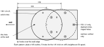
| Leg | Top | Hook the lip over | Tape station (cm), as marked in chapter D | Pattern |
|---|---|---|---|---|
| L1 | A | side-wall end (x = 0) | 42 from the back edge | 150, ringed holes |
| L2 L3 | A | back edge (y = 0) | 65 (L2) and 140 (L3) from the side-wall end | 100 |
| L4 L5 L6 | B | side-wall edge (x = 0) | 20 (L4), 95 (L5), 170 (L6) from the joint end | 100 |
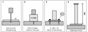
a Drop the leg jig back onto the five starts you made in chapter D, bit tip in each start, then lift it. b Finish each pilot 15 mm deep with the 1/8 in bit and the 15 LEG puck. c Screw the OLOV plate on with five H01 M4 × 16 screws (about 13 mm into the top). d Pre-set the leg to 80.2 cm from plate face to foot (or the table's number at the start of this chapter if you fit ALEX feet). Six legs, 30 screws.
OLOV plate ⌀105 mm, five ⌀5.5 mm holes on an ⌀85 mm circle, neighbouring holes 50 mm apart; leg range 60–90 cm. VERIFIED 105 mm plate measured 22 Oct 2026; hole pattern from a shared OLOV template, printed and test-fitted.
Hold each foot loose in your hand, plate and all, before anything is screwed. Wind its pad out until the printed foot height gauge (102.0 mm inside) just slides over it from the side with no rock. All eight then match without a ruler. Do this now: the gauge's C sits against the plate face, so it cannot be used once the plate is screwed to the top.
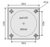
| Feet | Tool | Placement (as in chapter D) |
|---|---|---|
| F2 F4 | feet corner jig | top A's two far corners, fences on both edges |
| F1 F3 | T-square, 85 hole | lip over A's back edge (F1) or front edge (F3), station 34.5 cm from A's far end (tape hooked on the far end) |
| F7 F8 | feet corner jig | top B's two far corners |
| F5 F6 | T-square, 85 hole | lip over B's side-wall edge (F5) or front edge (F6), station 34.5 cm from B's far end (tape hooked on the far end) |
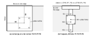
Drop the tool back onto the four starts you made in chapter D, bit tip in each start, then lift it and finish each pilot 15 mm deep with the 1/8 in bit and the 15 LEG puck. Screw the plate of each gauged foot on with four H02 #8 × 5/8 pan heads (14 mm into the top), pad pointing away from the top. Eight plates, 32 screws.
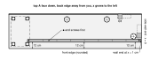
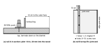
Rail A. Clamp it on its line, flat leg against the top, wall end at x = 1 cm. Hook a rail setback gauge over the front edge near each end and push the rail against both (12 cm from the front edge to the vertical leg's outer face); check the middle with one. Through each rail hole drill a 1/8 in pilot with the 25 RAIL puck standing on the flat leg (20 mm into the wood). Drive the two end screws first, re-check the 12 cm, then the rest: H03 #10 × 1 in Robertson on the #2 bit in the 3 in extension (the chuck would hit the vertical leg otherwise), until each head seats. Nine screws.
Rail B. Clamp it on its line with the corner end projecting 12 cm past top B's joint end. Pilot and screw holes 3 to 10 only, the same way: eight screws. Holes 1 and 2 go into top A in chapter H.
The printed rail end caps go on later, once the desk stands; they are handed: cap A fits rail A's far end, cap B fits rail A's wall end and rail B's far end. Rail B's corner end is bolted to rail A and takes no cap.
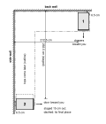
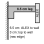
Stand ALEX 1 (P03) with its back 6.5 cm off the back wall and its near side 212.5 cm from the side wall, drawers toward you. Stand ALEX 2 (P04) with its side 6.5 cm off the side wall and, for now, its near end 282.5 cm from the back wall, door toward you: 5 cm short of its final 277.5 cm, so that rail B's corner end comes down clear of rail A's flat leg when top B is stood on it in chapter G. It is pushed home in chapter G. Painter's tape on the floor round each one saves guessing.
No rings yet: they are fitted in chapter G by tracing the pads (a 50 mm pad in a 52 mm ring has only about 1 mm each side).
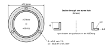
parts/structure/foot-ring.scad. VERIFIED from its own geometry file, mm: bore ⌀52, ring ⌀58 (3 wall) and 10 tall on a ⌀75 × 2.5 flange, three ⌀3.8 holes countersunk ⌀7.0 on r 33. Print flange-down, PETG or ABS.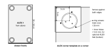
The check happens in chapter G step 2a: with the top lifted off and before any ring is drilled, lay the corner template on the bare corner. The pencil trace must sit inside the template's inner engraved circle (⌀52 mm) all round. If it does not, move the cabinet and trace again. The ring is round and is fitted turned so its own three holes are at any angle.
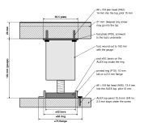
| Dimension | mm | Confidence |
|---|---|---|
| Top thickness | 28 | MEASURE ON HARDWARE expect 28 mm |
| Foot, plate face to pad (gauge) | 102 | SOURCE-DEFINED |
| Feet plate, hole spacing | 59.5 / 46.8 | VERIFIED |
| Pad diameter | 50 | MEASURE ON HARDWARE before relying on the 52 mm bore |
| Ring bore / ring / flange | 52 / 58 / 75 × 2.5 | VERIFIED geometry file |
| ALEX top panel thickness | 15.9 | VERIFIED 5/8 in, 23 Oct 2026; 2.5 mm under each screw |
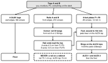
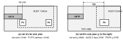
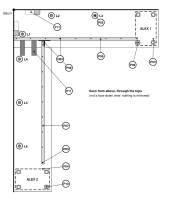
| No. | Part | No. | Part |
|---|---|---|---|
| P03 | ALEX 1, drawer unit 36 × 58 × 70 cm | P08 | Gusseted 90-degree strut fitting x 2 |
| P04 | ALEX 2, storage unit with door 36 × 58 × 70 cm | P09 | Round adjustable foot 4 in x 8 |
| P05 | OLOV leg x 6, 105 mm plate | P10 | Printed locating ring x 8 |
| P06 | Rail A, steel angle 213 cm | P11 | Mending plate 10 x 3 x 0.12 in x 4 (two joining, two clamp pads) |
| P07 | Rail B, steel angle 213 cm | H03 | #10 x 1 in pan head, Robertson (rails into the tops), 19 |
Next: chapter G, standing the tops on the cabinets and fitting the rings.